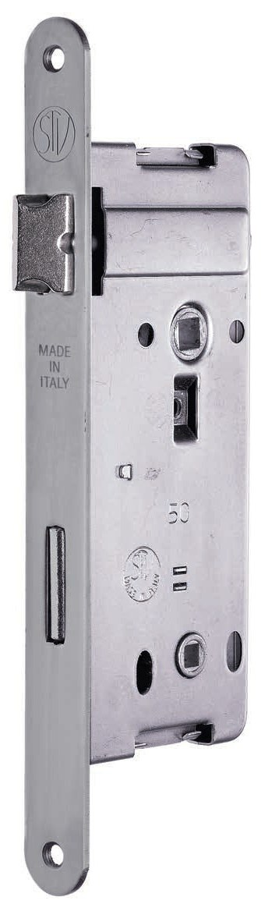

CREATURA
STV
08 / 16
Замки под ключ и WC

Art. 103–107 · 705–787
Сантехнические и под ключ
Замки с отверстием под WC-фиксатор или под ключ, обычные, малые и усиленные.
Межосевое
70 / 72 / 75 / 78 / 90 мм
Язычок
реверсивный · магнитный по запросу
Лицевая планка
круглая 18/22 мм или прямоугольная 22 мм